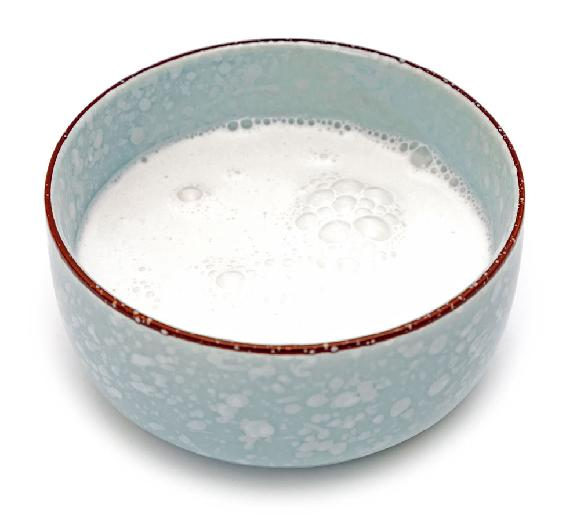
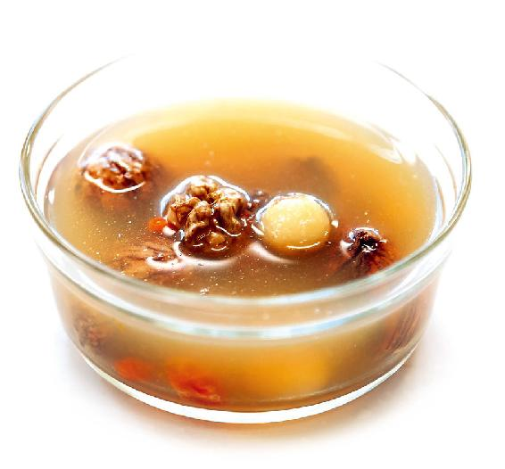

“喝了六天的养藏汤，我的亲身体会有两个。第一个是之前爱起夜，现在晚上不起夜了，即使睡前喝一杯水，晚上也不会起来上厕所。第二个是之前脚掌和脚后跟总是有死皮，现在也改善了很多……”
每年大雪节气期间，我的微信公众号和微博都会收到类似的读者留言。
晚上总起夜和脚后跟起死皮、开裂等问题经常困扰着一些中老年人，很多人都不清楚这是什么原因造成的，往往导致治标不治本，比如，怕晚上总起夜就不喝水、觉得脚后跟有死皮就去修脚或者涂很多的润肤霜。
后来，有些人就在小雪节气和大雪节气开始喝养藏汤，慢慢地，他们发现身体比以前好多了，晚上不起夜，脚后跟也不裂口了。
有人可能会产生疑问，怎么喝个汤还能补到脚后跟上去呢？感觉很神奇。其实，一点都不神奇，因为一些中老年人晚上总起夜和脚后跟开裂都跟肾虚有关。
晚上频繁起夜是肾气不固的表现，而脚后跟裂口子，则是肾阴虚导致的。我曾推荐过一个专门针对中老年人肾气不固的方子——把糯米粉调成糯米糊糊，每天吃，这样可以固肾气，避免晚上总起夜。
老年人晚上起来上卫生间，很容易摔倒，严重时还会骨折，有时候甚至会引发心脏病，这是非常危险的。因此，对老年人晚上总起夜这件事情，一定要给予足够的重视。
如果老年人晚上爱起夜，我建议您在大补养藏汤里加上糯米粉一起煮，注意不是加糯米，是加糯米粉。
因为糯米对老年人来说是比较难消化的，所以我们就用糯米粉。莲子去心还是不去心也可视天气情况灵活掌握：暖冬喝大补养藏汤，您就可以不去心；冷冬喝大补养藏汤，可以把莲子心去掉。
睡眠不好的人，可以吃带心莲子。
另外，白带比较多的女性，适合在大补养藏汤里多放一点莲子，因为莲子有健脾祛湿的作用。
读者评论：大补养藏汤里加了大米熬成粥，味道很好
文麒舒：我母亲今年76岁，平时尿频、双腿酸痛无力，时不时会流清鼻涕。坚持喝了一周大补养藏汤，上述症状明显减轻。我在汤里加了大米熬成粥，味道不那么苦涩，很好喝，里面还放了全桂圆。
糯米粉大补养藏汤
原料：糯米粉、大补养藏汤。
做法：
1.把糯米粉先用凉水调开。
2.当煮好大补养藏汤后，把调好的糯米粉倒进锅里，然后迅速地搅拌。
3.再煮两三分钟就可以煮成一锅糯米粉大补养藏汤了。


允斌叮嘱：
1. 对老年人小便频多、肾气不固很有帮助。
2. 如果老年人晚上总起夜，而且大便还不成形，就可以在汤里多放点去心的莲子。如果便秘，莲子就不去心。
如果您脚后跟死皮多，或者脚后跟冬天裂血口子，或者走路的时候脚后跟会痛，那要请您注意了，这三种情况都是肾阴虚的一个预警信号——肾阴不足，就容易被冬天的风所伤，形成肾风病。
如果有以上情况的朋友，您在喝大补养藏汤的时候栗子就可以稍微多放几个，但也不要太多，因为栗子不那么好消化。
有的人给我留言说：“大补养藏汤太好喝了，连家里一岁半的孩子都抢着要喝。”而有的人则给我留言说：“这个汤怎么这么苦涩啊，我喝不下去。”
其实，这道汤的味道如何，完全取决于汤中原料的搭配比例。但我们不能光根据自己的口味来搭配，还要根据自己的身体来搭配。
如果汤味发苦，原因可能在于陈皮不对，您可以换一种陈皮来试试；如果汤味发涩，那是正常现象，我们要的就是这种涩味。
这道汤里的涩味来自核桃、栗子的内皮，主要是来自栗子的内皮，因为核桃、栗子的内皮的营养都溶解到汤里了，所以汤才会发涩。
核桃、栗子内皮的涩味，中医认为有固摄人体精气的作用。
从营养学上来说，涩味是来自核桃、栗子内皮含有的多酚类物质，这种物质有很强的抗氧化作用。
如果您细细地去品大补养藏汤的涩味，有没有觉得它跟茶水的那种涩味很相似呢？其实，这基本是一回事。
茶水为什么会有涩味呢？一个原因就是茶叶含有多酚类物质。多酚对人体健康有好处，核桃和栗子的内皮含有的多酚类物质也有同样的作用，但它们所含的多酚类物质又有点不尽相同，所以您最好几样都吃。
读者评论：喝了大补养藏汤，脚后跟皮肤变好了
高山流水：脚后跟越来越干，这两年一到冬天就干裂，抹多少油也不管用。去年，从小雪节气前一周开始喝补肾养藏汤，到大雪节气喝大补养藏汤，由于工作的关系没时间天天喝，只是隔三岔五煮一回。没想到一个月后，脚后跟的皮肤变好了，也不再裂口了，真是神奇！
允斌解惑：大补养藏汤可以长期喝吗？
曾莹：大雪节气的大补养藏汤，可以长期喝吗？我的脚后跟经常开裂，原以为是遗传，看了《吃法决定活法》一书后，才知道是肾虚引起的。
允斌：可以长期喝，也可以配合墨鱼一起喝。